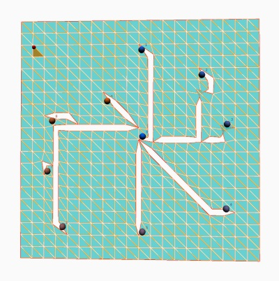
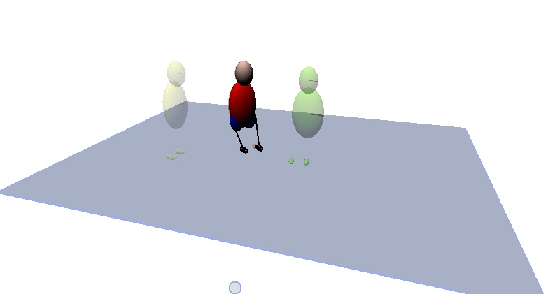
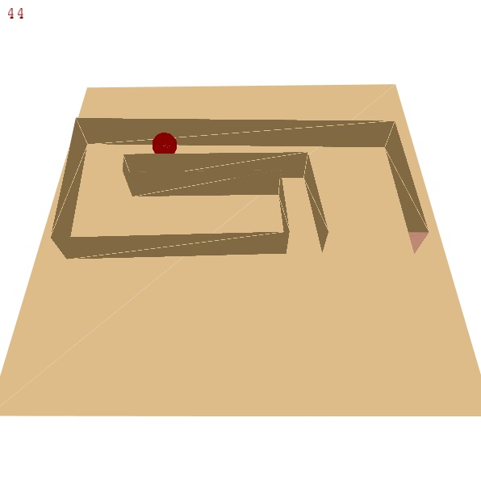
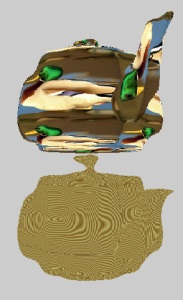
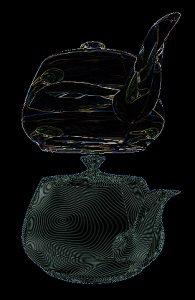

Joshua Scott Harris
A developer seeking to change the world through fun and interaction.
Game Design
Patches And Fudge
This is the game that got us first place at Global Game Jam Atlanta 2014, where we had 48 hours to develop a game. The premise of the game is that you are a rational adult thief that can shift into a small imaginative child. Where the adult sees a normal key, the child sees a flying key that can travel around and unlock doors for him. When the child sees a terrifying ogre guarding his way, the adult sees a sleeping guard. The player must use his abilities as both an adult and a child to work his way through the level and obtain his prize. Make sure to check out this awesome video preview of the game that our art team made.
Art Team: Ginger, Sun, Andrew, Aki
Kyle's Time Travel Adventure
Kyle the robot crash lands on earth. In this game it is the goal of the player to help Kyle get back to his ship and return to his home planet. Kyle has to use his time travel device to travel between the past, present, and future in order to navigate the landscape and work through the various obstacles in his path. Is there a cliff in your way? Plant a tree and wait for it to grow so you can climb up it. Do you need a saw? Travel back in time to a construction site. Nothings impossible when you have time at your finger tips in this time travel adventure.
Web Applications @ Southern Company
Stars Mobile
Stars is the Southern Company payroll management system. It is responsible for keeping track of employee hours worked on the various assignments that each employee was tasked with.
The Stars Mobile Web App was an application that I built the prototype designs for. The goal was to give users who report their own hours (or managers who have to report employee hours) a portal to inputing hours from anywhere on their mobile device.
Cool Compliance Emailer
Cool Compliance Emailer (C2Emailer) was a system that I helped create which would store premade HTML emails in a database. C2Emailer emails would be sent to one or more persons or groups whenever a person's privileges were changed in Cool Compliance.
Cool Compliance was the system which controlled the permissions of all employees throughout the various computer systems.
Online Customer Care Mobile
Southern Company's Online Customer Care (OCC) website is the portal for all Georgia Power, Alabama Power, Mississippi Power, and Gulf Power customers to pay their bill, report an outage, or find answers to any of the questions that they had.
I worked on a team to create a simplified Mobile OCC Web App with the key features of the desktop version. This web app was the quick solution to customers for paying bills and reporting outages while on the go.
Graphics Experience
Mesh Traversals and Cutting
In this project another student and myself had to build several mesh manipulation tools. The largest of these was to design cutting or cracking functionality. Another tool we created was one that would go through the mesh and remove non-manifold vertices. There were also several tools for traversing through the mesh and manipulating the shape of it.
Dance Choreography Tool
This is a tool that allows the user to map out dance routines in a 2D and 3D environment. The tool then has an avatar dance out the routine in order to demonstrate what the dance looks like. Users can save their dance routines and capture photos and video of them.
Marble Labyrinth
This is a game that I worked on in Computer Graphics. It was built using Processing's built in 3D engine. The game allows the player to create a maze and then the player must navigate the ball through the maze in the given time limit.
Shaders
 LOTS of fun shader work.